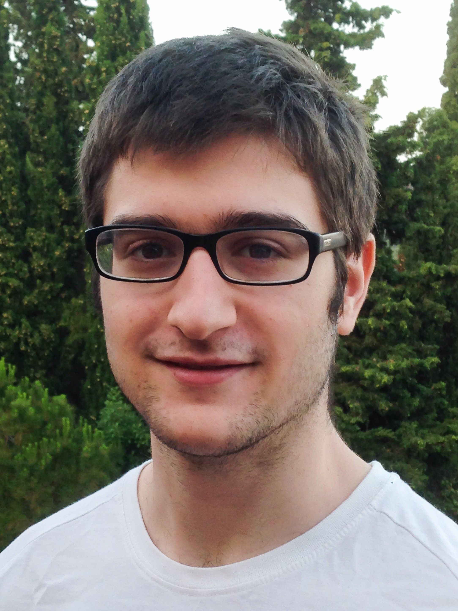

Curriculum Vitae
Estudis Oficials· Curs 2019 -actualitatCursant un grau en Enginyeria Informàtica a la Universitat de Girona (UdG) · Del 2016 al 2020 Grau en cant barroc/renaixentista al a la Civica Scuola di Milano Claudio Abbado · Curs 2012-13 i 2013-14 Batxillerat científic a l’Escola Pia Santa Anna de Mataró · Cursos 2010-11 i 2011-12 3r i 4t d’ESO a l’Escola Pia Santa Anna de Mataró · Curs 2008-09 a 2009-10 1r i 2n d’ESO a l’Escolania de Montserrat · Curs 2006-07 a 2007-08 5è i 6è de Primària a l’Escolania de Montserrat IdiomesAnglès· Curs 2014-15 Pre-proficiency a l’International House de Mataró · Juliol 2014 Obtenció del títol Advanced Certificate (Cambridge) · Agost 2012 Estada lingüística a Irlanda · Juliol 2012 Obtenció del First Certificate English (Cambridge) Català Castellà Italià Alemany Experiència laboral prèviaFeines ocasionals al sector de l’hosteleriaParticipació en diversos camps de treball, a Alemanya i Sèrbia Estudis ExtraoficialsMúsica· 2011-2016Forma part del Cor Ciutat de Mataró sota la direcció de Jordi Lluc · Curs 2010-11 fins a l’actualitat Cant a l’Escola de Música L’Oriola de St. Vicenç de Montalt · Curs 2009-10 1r de Grau Mitjà d’estudis musicals reglats per la Generalitat de Catalunya · Curs 2008-09 Obtenció del Grau Elemental de música amb l’especialitat de Cant InformàticaLlenguatges de programació· C· C++ · Java · Python · HTML · PHP · Ladder · Grafcet · Llenguatge màquina Aficions· Teatre d’aficionat: diverses obres realitzades al Centre Parroquial d’Argentona i a la companyia “la Tropa teatre” de Vilassar de mar.· Música · videojocs |

|
|---|